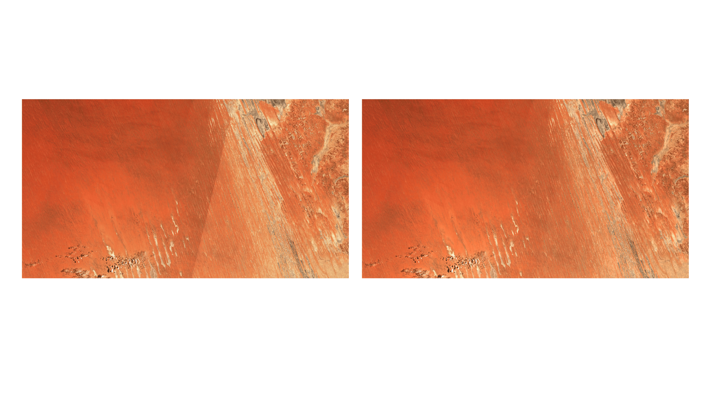

Data preprocessing
Processing steps for Earth observation data vary considerably across the major data sources, but share common goals of converting sensor measurements into analysis-ready data formats. Here, we provide an overview of the processing steps that the remote sensing community commonly applies to three of the most widely used EO products: Sentinel-1, Sentinel-2, and Landsat.
Sentinel-1 preprocessing
Synthetic aperture radar data requires a distinct and often more involved preprocessing chain than optical imagery. SAR sensors measure the coherent backscatter of microwave pulses, and the resulting images are affected by multiplicative speckle noise, radiometric variations driven by local terrain geometry, and geometric distortions inherent to the side-looking acquisition (as described in Section SAR data selection). Unlike optical sensors, whose Level-2 products are typically delivered as atmospherically corrected products, Sentinel-1 Ground Range Detected (GRD) products are distributed at a relatively early processing stage and require several user-side corrections before they can be meaningfully compared across space and time.
Processing steps
The corrections needed to convert GRD products into analysis ready backscatter can be grouped into four stages. First, thermal noise removal suppresses additive noise artifacts that are particularly visible near swath edges and in cross-polarization channels. Second, radiometric calibration converts digital numbers to a physically meaningful backscatter coefficient. The most common conventions are \(\sigma_0\) (referenced to the area on the reference ellipsoid), \(\beta_0\) (referenced to the slant range area), and \(\gamma_0\) (referenced to the area perpendicular to the look direction). The latter is increasingly preferred because, when combined with DEM-based radiometric terrain flattening, it reduces the dependence of backscatter on local terrain slope, making it more suitable as an input to terrain correction (see SAR Radiometric Calibration). Third, speckle reduction addresses the multiplicative speckle noise produced by the coherent nature of SAR imaging. Speckle can be suppressed through spatial filtering [1], [2], [3], though this trades spatial resolution for radiometric smoothness. Resolution-preserving alternatives exist, notably methods that leverage a stack of SAR acquisitions to denoise individual images [4]. A simple strategy adopted in the SatML community [5], [6] is temporal averaging, e.g., monthly compositing, which reduces speckle without sacrificing spatial detail, at the cost of discarding individual observations. Each approach navigates a trade-off between computational complexity, spatial resolution, and temporal resolution, and the appropriate choice depends on which of these the downstream application can afford to sacrifice. Fourth, geometric and radiometric terrain correction addresses distortions caused by topography. GRD products are projected onto an Earth ellipsoid model and do not account for local terrain relief, leading to geometric distortions in areas with significant topography. Range-Doppler terrain correction uses a DEM to project the data onto map geometry with accurate geolocation, recovering foreshortened areas. This DEM-based orthorectification step is essential, particularly when collocating Sentinel-1 with optical imagery over anything but flat ground. Even with correct geolocation, the standard backscatter conventions all normalize for area assuming a flat ellipsoid, so slopes tilted toward the sensor receive more illumination per unit assumed area and appear brighter than equivalent slopes facing away, and intensity becomes partly a function of topography rather than ground properties. Radiometric terrain correction addresses this by normalizing against the true terrain-illuminated area per pixel. Established toolboxes including pyroSAR [7] and the ESA SNAP toolbox [8] provide implementations of these workflows.
Platform-specific processing
The absence of a standardized preprocessing pipeline for Sentinel-1 GRD data means that the choice of data provider is, in practice, inseparable from the preprocessing approach. Different platforms deliver Sentinel-1 data at different stages of processing, using different DEMs, backscatter conventions, and speckle treatments — differences that can propagate silently into downstream models. Details are provided in Sentinel-1 Processing. Within the Copernicus Data Space Ecosystem (CDSE) [9], data are available from GRD products to the more recent Sentinel-1 RTC product. Google Earth Engine applies its own processing to native GRD data; the reference implementation [10] and its associated package [11] provide guidance on proper analysis-ready data preparation on GEE. AWS S3 hosts the GRD archive from CDSE in cloud-optimized GeoTIFF format [12] as well as a Sentinel-1 RTC collection over the contiguous United States [13]. Microsoft Planetary Computer [14] provides both a GRD collection from ESA and an RTC collection that they process themselves; for the former, they encourage users to apply geometric or radiometric terrain correction on the fly using any DEM available on the platform.
ALOS PALSAR/PALSAR-2 mosaics
Beyond Sentinel-1, another widely used SAR data source is the ALOS PALSAR/PALSAR-2 annual mosaic, a seamless global L-band SAR image created by mosaicking strips of PALSAR and PALSAR-2 imagery. Each strip is orthorectified and slope-corrected using the ALOS World 3D–30 m digital surface model, and polarization data can be converted to \(\gamma_0\) values. Because these mosaics are delivered as annual composites with terrain and radiometric corrections already applied, they require less user-side preprocessing than Sentinel-1 GRD products.
Sentinel-2 preprocessing
Sentinel-2 data are distributed at two main processing levels: Level-1C, which provides top-of-atmosphere reflectance, and Level-2A, which provides bottom-of-atmosphere (BOA) reflectance after atmospheric correction via the Sen2Cor processor. The vast majority of ML workflows operate on L2A products, but several preprocessing steps are still required before the data are suitable for model ingestion. Some of these are near-universal and straightforward while others are more specialized and applied only when the application demands high temporal or spatial consistency.
Cloud masking
Cloud and cloud shadow contamination is a challenge common to all passive optical sensors, not only Sentinel-2. However, because Sentinel-2 is the dominant optical data source in the recent ML literature, most dedicated cloud detection methods (particularly deep learning-based approaches) have been developed and benchmarked on Sentinel-2 imagery. Many of these methods are in principle applicable to other optical sensors (Landsat, MODIS, etc.), though they may require retraining or adaptation to account for differences in spectral bands and spatial resolution. Several cloud and cloud shadow detection methods are available for Sentinel-2, ranging from the Scene Classification Layer (SCL) included in every L2A product to dedicated deep learning models, as summarized in Cloud Masking Methods. The choice of which method to use is largely dependent on computing resources and the amount of processing effort one is willing to invest. The SCL layer is already provided for each L2A product and, for GEE users, Cloud Score+ scores are, too. The other methods need to be run for each product, and while the DL methods outperform the more traditional ones, some of them require substantial computational requirements. [15] report the computational efficiency of their method against some others on an NVIDIA 4090 GPU, which can provide an indication of relative processing speeds, although GPUs might not be available for this processing step. Furthermore, whether to apply cloud and cloud shadow masking at all depends on the intended use of the data. For workflows that temporally aggregate observations into composites, median aggregation already suppresses most cloud contamination, though masking cloudy and shadowed pixels beforehand generally yields cleaner composites and, for that purpose, the SCL layer is typically sufficient. For workflows that operate on individual scenes, the decision involves a trade-off between input quality and model robustness: aggressive masking produces cleaner inputs but discards data, while retaining cloudy pixels forces the model to learn to identify and handle these artifacts itself, consuming part of its representational capacity.
Radiometric processing
Since the deployment of Sentinel-2 Processing Baseline (PB) 04.00 in January 2022, a radiometric offset is added to the digital number values of all bands. For Sentinel-2 L1C data, the conversion to reflectance is given by Equation 5.1, where \(\rho_{TOA}\) is the top-of-atmosphere (TOA) reflectance, \(DN\) is the digital number, \(RADIO\_ADD\_OFFSET\) is the radiometric offset (\(-1000\) for all bands for PB\(\geq04.00\), \(0\) otherwise), and \(QUANTIFICATION\_VALUE = 10{,}000\). For Sentinel-2 L2A data, the conversion is given by Equation 5.2, where \(\rho_{BOA}\) is the bottom-of-atmosphere (BOA) reflectance, \(BOA\_ADD\_OFFSET\) is the corresponding offset (\(-1000\) for all bands for PB\(\geq04.00\), \(0\) otherwise), and \(BOA\_QUANTIFICATION\_VALUE = 10{,}000\). All values can be retrieved from the product metadata files. The offset applies to any product with Processing Baseline \(\geq\) 04.00, which should be determined from the PROCESSING_BASELINE field in the metadata rather than the acquisition date: as part of the Collection-1 reprocessing campaign completed in 2024, ESA reprocessed the entire historical archive, so even early acquisitions now carry the offset convention. This procedure applies to products distributed by ESA (e.g., through CDSE). Some third-party platforms (such as GEE’s harmonized collections) apply the offset upstream, in which case it must not be applied a second time.
\[ \rho_{TOA}=\frac{DN+RADIO\_ADD\_OFFSET}{QUANTIFICATION\_VALUE} \tag{5.1}\]
\[ \rho_{BOA}=\frac{DN+BOA\_ADD\_OFFSET}{BOA\_QUANTIFICATION\_VALUE} \tag{5.2}\]
While Equation 5.1 and Equation 5.2 use a quantification value of \(10{,}000\) as specified in the product metadata, ML pipelines sometimes substitute alternative divisors: [16] use \(3{,}000\) and [5], [17] apply band-specific divisors. These linear schemes target a bounded range such as \([0,1]\) or \([-1,1]\), typically with further clipping. A less conventional family of approaches instead applies nonlinear transformations to handle the long-tailed distribution of reflectance values. [18] log-transform reflectance values and remap percentiles of the result onto a sigmoid function, bounding the data to \((0,1)\) without hard truncation. Similarly, [19], [20] compress the distribution as \(x'=\log(x+1)/10\).
Additional corrections
The steps described above are near-universal in ML workflows using Sentinel-2 L2A data. However, L2A products still contain systematic variations in reflectance that are unrelated to actual surface properties, and addressing these requires additional, more specialized corrections. The most prominent source of such variation is viewing and illumination geometry. Pixels at the edge of the swath are observed at a noticeably different angle than those at nadir, and across orbits and dates the sun position changes, meaning the same ground pixel can yield different reflectance values purely because of geometry. Bidirectional Reflectance Distribution Function (BRDF) normalization adjusts reflectance to a standard viewing and illumination configuration, producing smoother time series and reducing visible seam lines at tile boundaries, at the cost of surface structure assumptions and an additional preprocessing step. Implementations are available through Sentinel Hub [21], the sen2nbar package [22] and the FORCE framework [23]; an example is shown in Figure Figure 5.1. Topography introduces a related but distinct problem: slope, aspect, and cast shadows modulate recorded reflectance in mountainous areas in ways that the flat-Earth assumption underlying Sen2Cor does not fully resolve. Multi-temporal consistency can also be degraded by geometric misalignment: images processed before the adoption of the Ground Reference Image (GRI) in 2021 have a nominal geolocation uncertainty of around 12 m [24], which is problematic for change detection or any pixel-wise temporal method. For products obtained prior to the GRI adoption, methods such as phase correlation [25] can correct residual misalignments. Rather than addressing these issues individually on top of L2A products, some users bypass the operational processing chain entirely and apply their own atmospheric correction, topographic normalization, and BRDF adjustment to Level-1C data. The FORCE framework provides such an integrated pipeline, offering more control and consistency at a substantially higher computational cost.

Landsat preprocessing
While Sentinel-2 requires substantial user-side preprocessing, Landsat benefits from a more mature and standardized processing pipeline. For Landsat data, the preprocessing burden is correspondingly lower, owing to the maturity of the USGS processing pipeline. Collection 2 Level-2 Science Products provide atmospherically corrected surface reflectance along with surface temperature, delivered scene-by-scene in UTM projection. Each scene includes a per-pixel quality assessment band produced by FMask [26]. The Landsat Analysis Ready Data (ARD) product further standardizes the geometric framework by tiling scenes onto a fixed grid in Albers Equal Area projection, eliminating the need to manage overlapping scene boundaries, though the underlying radiometric processing is identical to Collection 2 Level-2.
Researchers working with multi-decadal archives should be aware that the spectral response functions differ across Landsat generations. Landsat 8/9 uses narrower bands that avoid atmospheric absorption features present in Landsat 5 and Landsat 7 bandpasses, leading to systematic offsets that can bias time-series analysis if uncorrected. Spectral bandpass adjustment coefficients have been published by [27] to harmonize across sensors. As with Sentinel-2, BRDF normalization can improve temporal consistency by reducing view-angle and illumination effects: [28] developed an approach that applies MODIS BRDF spectral model parameters to normalize Landsat surface reflectance to a nadir view at a standard solar zenith angle.
The Harmonized Landsat Sentinel-2 (HLS) dataset [29] offers a convenient starting point for studies that combine both missions. HLS provides 30m surface reflectance from Landsat 8/9 and Sentinel-2A/B, with atmospheric correction, BRDF normalization, cloud masking, and spectral bandpass adjustment applied consistently across both sensors. Products are delivered on the Sentinel-2 MGRS tile grid, yielding an effective revisit period of 2–3 days. For ML researchers building large-scale maps, HLS removes much of the cross-sensor harmonization burden, though users should note the trade-off: Sentinel-2’s native 10m resolution is sacrificed in favor of cross-mission consistency.
At this point in the pipeline, the EO data has been selected, downloaded, and preprocessed into a spatially and radiometrically consistent dataset. The next section addresses the ML stages of the pipeline: how to structure these preprocessed observations into a training-ready dataset and how to design and train models that are both accurate and efficient enough for large-scale inference.